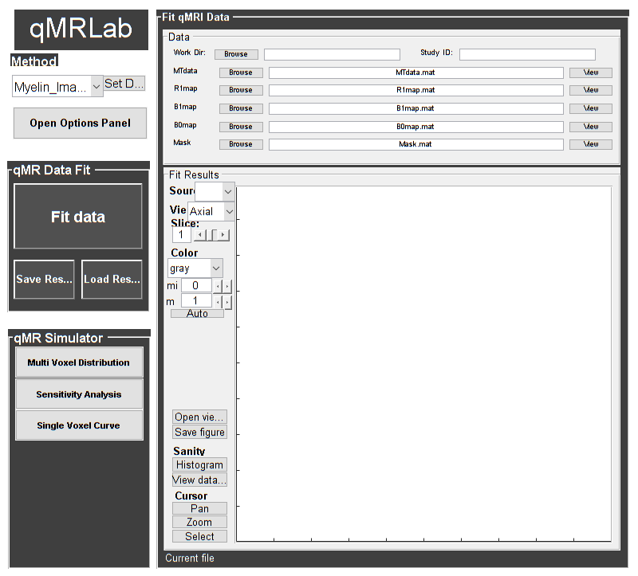
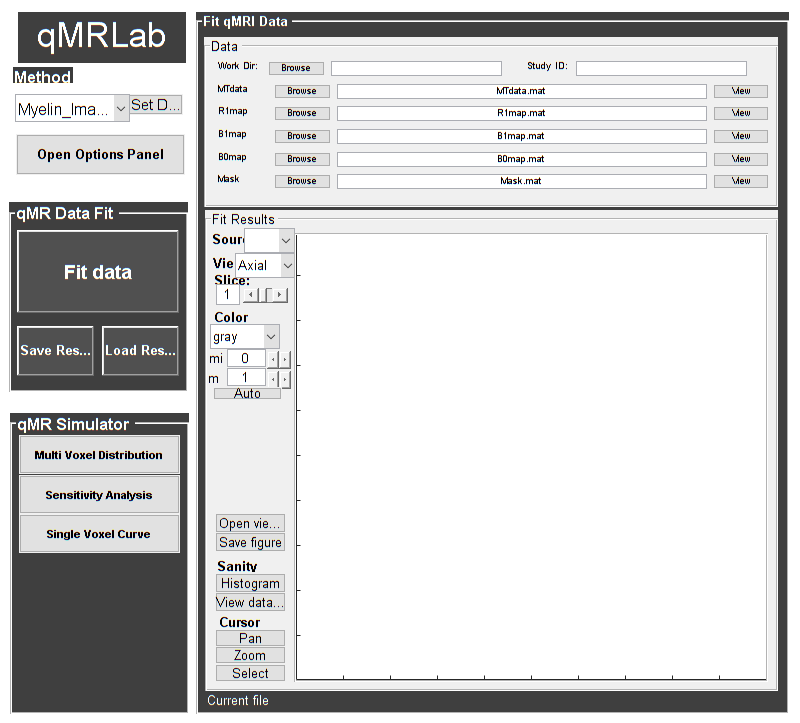

Contents
% Batch to process SPGR data without qMRLab GUI (graphical user interface) % Run this script line by line % Written by: Ian Gagnon, 2017
DESCRIPTION
warning('off', 'all') help SPGR
-----------------------------------------------------------------------------------------------------
SPGR : qMT using Spoiled Gradient Echo (or FLASH)
-----------------------------------------------------------------------------------------------------
-------------%
ASSUMPTIONS %
-------------%
(1) FILL
(2)
(3)
(4)
-----------------------------------------------------------------------------------------------------
--------%
INPUTS %
--------%
1) MTdata : Magnetization Transfert data
2) R1map : 1/T1map (OPTIONAL but RECOMMANDED Boudreau 2017 MRM)
3) B1map : B1 field map (OPTIONAL)
4) B0map : B0 field map (OPTIONAL)
5) Mask : Binary mask to accelerate the fitting (OPTIONAL)
-----------------------------------------------------------------------------------------------------
---------%
OUTPUTS %
---------%
Fitting Parameters
* F : Ratio of number of restricted pool to free pool, defined
as F = M0r/M0f = kf/kr.
* kr : Exchange rate from the free to the restricted pool
(note that kf and kr are related to one another via the
definition of F. Changing the value of kf will change kr
accordingly, and vice versa).
* R1f : Longitudinal relaxation rate of the free pool
(R1f = 1/T1f).
* R1r : Longitudinal relaxation rate of the restricted pool
(R1r = 1/T1r).
* T2f : Tranverse relaxation time of the free pool (T2f = 1/R2f).
* T2r : Tranverse relaxation time of the restricted pool (T2r = 1/R2r).
Additional Outputs
* kf : Exchange rate from the restricted to the free pool.
* resnorm: Fitting residual.
-----------------------------------------------------------------------------------------------------
----------%
PROTOCOL %
----------%
1) MTdata
* Angle : MT pulses angles (degree)
* Offset : Offset frequencies (Hz)
2) TimingTable
* Tmt : Duration of the MT pulses (s)
* Ts : Free precession delay between the MT and excitation pulses (s)
* Tp : Duration of the excitation pulse (s)
* Tr : Free precession delay after tje excitation pulse, before
the next MT pulse (s)
* TR : Repetition time of the whole sequence (TR = Tmt + Ts + Tp + Tr)
-----------------------------------------------------------------------------------------------------
---------%
OPTIONS %
---------%
MT Pulse
* Shape : Shape of the MT pulse.
Available shapes are:
- hard
- gaussian
- gausshann (gaussian pulse with Hanning window)
- sinc
- sinchann (sinc pulse with Hanning window)
- singauss (sinc pulse with gaussian window)
- fermi
* Sinc TBW : Time-bandwidth product for the sinc MT pulses
(applicable to sinc, sincgauss, sinchann MT
pulses).
* Bandwidth : Bandwidth of the gaussian MT pulse (applicable
to gaussian, gausshann and sincgauss MT pulses).
* Fermi
transition (a) : slope 'a' (related to the transition width)
of the Fermi pulse (applicable to fermi MT
pulse).
Assuming pulse duration at 60 dB (from the Bernstein handbook)
and t0 = 10a,
slope = Tmt/33.81;
* # of MT pulses : Number of pulses used to achieve steady-state
before a readout is made.
Fitting constraints
* Use R1map to : By checking this box, you tell the fitting
constrain R1f algorithm to check for an observed R1map and use
its value to constrain R1f. Checking this box
will automatically set the R1f fix box to true
in the Fit parameters table.
* Fix R1r = R1f : By checking this box, you tell the fitting
algorithm to fix R1r equal to R1f. Checking this
box will automatically set the R1r fix box to
true in the Fit parameters table.
* Fix R1f*T2f : By checking this box, you tell the fitting
algorithm to compute T2f from R1f value. R1f*T2f
value is set in the next box.
* R1f*T2f = : Value of R1f*T2f (no units)
Global
* Model : Model you want to use for fitting.
Available models are:
- SledPikeRP (Sled & Pike rectangular pulse),
- SledPikeCW (Sled & Pike continuous wave),
- Yarkykh (Yarnykh & Yuan)
- Ramani
Note: Sled & Pike models will show different
options than Yarnykh or Ramani.
* Lineshape : The absorption lineshape of the restricted pool.
Available lineshapes are:
- Gaussian
- Lorentzian
- SuperLorentzian
* Read pulse : Flip angle of the excitation pulse.
alpha
* Compute : By checking this box, you compute a new SfTable
SfTable
-----------------------------------------------------------------------------------------------------
Written by: Ian Gagnon, 2017
Reference: Sled, J.G., Pike, G.B., 2000. Quantitative interpretation of magnetization transfer in spoiled gradient echo MRI sequences. J. Magn. Reson. 145, 24?36.
-----------------------------------------------------------------------------------------------------
Reference page in Doc Center
doc SPGR
Load dataset
%warning('off') [pathstr,fname,ext]=fileparts(which('SPGR_batch.m')); cd (pathstr); % Load your parameters to create your Model % load('MODELPamameters.mat'); %load('SPGRParameters.mat'); Model = SPGR;
Check data and fitting (Optional)
%************************************************************************** % I- GENERATE FILE STRUCT %************************************************************************** % Create a struct "file" that contains the NAME of all data's FILES % file.DATA = 'DATA_FILE'; file.MTdata = 'MTdata.mat'; file.R1map = 'R1map.mat'; file.B1map = 'B1map.mat'; file.B0map = 'B0map.mat'; file.Mask = 'Mask.mat'; %************************************************************************** % II- CHECK DATA AND FITTING %************************************************************************** qMRLab(Model,file);

 
 Create Quantitative Maps
%************************************************************************** % I- LOAD PROTOCOL %************************************************************************** % MTdata Angles = [ 142 ; 426 ; 142 ; 426 ; 142 ; 426 ; 142 ; 426 ; 142 ; 426 ]; Offsets = [ 443 ; 443 ; 1088 ; 1088 ; 2732 ; 2732 ; 6862 ; 6862 ; 17235; 17235 ]; Model.Prot.MTdata.Mat = [Angles,Offsets]; % Timing Table (time in sec) Tmt = 0.0102; Ts = 0.0030; Tp = 0.0018; Tr = 0.0100; TR = Tmt + Ts + Tp + Tr; Model.Prot.TimingTable.Mat = [ Tmt ; Ts ; Tp ; Tr ; TR ]; % *** To change other option, go directly in qMRLab *** % Update the model and Model = Model.UpdateFields; % Compute SfTable if necessary Prot = Model.GetProt; Model.ProtSfTable = CacheSf(Prot); %************************************************************************** % II- LOAD EXPERIMENTAL DATA %************************************************************************** % Create a struct "data" that contains all the data % .MAT file : load('DATA_FILE'); % data.DATA = double(DATA); % .NII file : data.DATA = double(load_nii_data('DATA_FILE')); data = struct; load('MTdata.mat'); data.MTdata = double(MTdata); load('R1map.mat'); data.R1map = double(R1map); load('B1map.mat'); data.B1map = double(B1map); load('B0map.mat'); data.B0map = double(B0map); load('Mask.mat'); data.Mask = double(Mask); %************************************************************************** % III- FIT DATASET %************************************************************************** FitResults = FitData(data,Model,1); % 3rd argument plots a waitbar FitResults.Model = Model; delete('FitTempResults.mat'); %************************************************************************** % IV- CHECK FITTING RESULT IN A VOXEL %************************************************************************** figure voxel = [34, 46, 1]; FitResultsVox = extractvoxel(FitResults,voxel,FitResults.fields); dataVox = extractvoxel(data,voxel); Model.plotmodel(FitResultsVox,dataVox) %************************************************************************** % V- SAVE %************************************************************************** % .MAT file : FitResultsSave_mat(FitResults,folder); % .NII file : FitResultsSave_nii(FitResults,fname_copyheader,folder); FitResultsSave_nii(FitResults); save('SPGRParameters.mat','Model');

Check the results
Load them in qMRLab